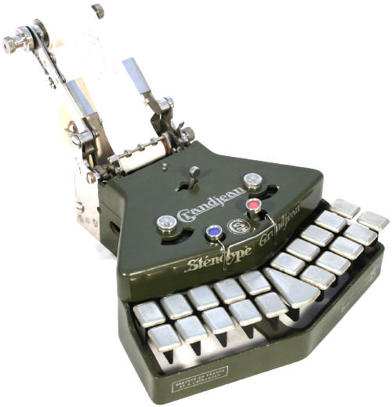
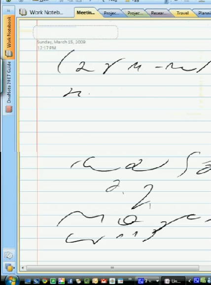

International
InternationalOcalić od zapomnienia.
2011-01-01 | autor: flamenco108
Plotka głosi, że zaczyna się bal. Na portalach i blogach życzenia świąteczne i noworoczne. Zatem i u nas z końcem roku pora na chwilę refleksji.
Co się stanie ze stenografią? Czy zniknie, wyrzucona na śmietnik historii, bezużyteczna, śmieszna umiejętność z przeszłości? Wzbudzająca nostalgię sentymentalnych jajogłowych ze smutkiem obserwujących postęp klawiatur?
Wierzę, że tak się nie stanie. Stenografia jest sztuką, umiejętnością, techniką liczącą sobie tyle lat, co pismo długie, bo powstała obok niego i uzupełniała jego braki, tak jak pismo długie uzupełniało jej braki. Życie wciąż się zmienia, a pismo pozostaje. Zmieniają się tylko narzędzia piśmiennicze. Dlaczego miałoby być inaczej ze stenografią?
Wielu dziś nie ma nawet świadomości, że taka sztuka istnieje. Została wyparta z zastosowań biznesowych i urzędowych. Nie ma już kursów stenografii. Ostatni zawodowcy odchodzą na emerytury, choć nie wymyślono jeszcze dla nich zastępstwa w pewnych niszowych zadaniach.

Można pomyśleć, że skoro nie jest potrzebna zawodowo, może dobrze, że umrze? A dlaczego tańce ludowe nie umarły i mają się w miarę dobrze? Dlaczego rzeźbienie w drewnie, gra na gitarze, sztuka fechtunku mieczem nikogo nie dziwią? Bo uważa się je za cenne umiejętności? Czy może lepiej wymościły sobie gniazdko w ludzkiej świadomości? Czy stenografia nie zasługuje też na swój, maleńki, kącik?
W naturze nic nie ginie, zmienia tylko formę lub przeznaczenie. Kto wie, do czego może się w przyszłości przydać sztuka fechtunku, łucznictwo, czy układanie bukietów? Umiejętności te przetrwają i może kiedyś zakiełkują nowym zastosowaniem, może inspiracją dla wynalazców lub artystów. A na razie funkcjonują obok rzeczywistości jako sztuki wyzwolone, hobby praktykowane po godzinach.
Jeżeli już nikt nie widzi sensu w używaniu stenografii, niech przetrwa przynajmniej jak sztuka miecza, czy malowania na szkle. Niech nie zostanie zapomniana, może jeszcze kiedyś się przyda, nie znamy przyszłości.
Ocalić od zapomnienia. Po to powstała ta strona.
Wszystkiego najlepszego z okazji Nowego Roku
Tą nostalgiczną nutą składam Wam wszystkim najserdeczniejsze życzenia Szczęśliwego Nowego Jorku numer już 2011, czyli Ostatniego Roku Przed Końcem Świata Zdaniem Wielu Niszowych, co prawda mniej niż stenografia, Proroków.
2011-01-01 autor: flamenco108